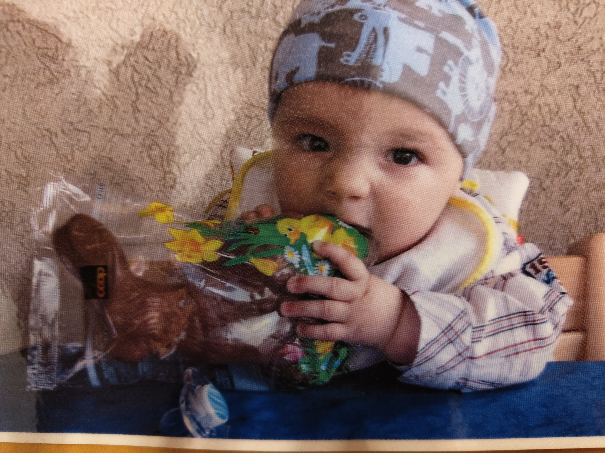

Ich bin 16 Jahre alt und wohne auf einem idyllischen Bauernhof in Balgach, mitten in der schönen Ostschweiz. Mein Zuhause ist aber nicht das Haupthaus meiner Familie, sondern ein gemütlich eingerichteter Bauwagen, in dem ich mein eigenes kleines Reich habe. Das gibt mir viel Freiheit und Unabhängigkeit, und trotzdem bin ich immer in der Nähe meiner Familie, die mir sehr wichtig ist.
Mein Vater ist selbstständiger Landwirt und kümmert sich mit viel Herzblut um unseren Hof. Meine Mutter arbeitet als Kindergärtnerin und ist für eine Klasse verantwortlich. Ich habe zwei jüngere Brüder: Livio ist 14 Jahre alt und besucht die Sekundarschule in Heerbrugg und Ramon ist 10 Jahre alt und besucht noch die Primarschule in Balgach. Ausserdem wohnt mein Onkel bei uns und meine Oma, die immer eine spannende Geschichte von früher auf Lager hat.
Zurzeit mache ich eine Lehre als Informatiker Fachrichtung Applikationsentwicklung. Ich bin im ersten Lehrjahr bei der SFS in der Au, ein toller Betrieb, in dem ich mich sehr wohl fühle. Die Arbeit macht mir sehr viel Spass, weil ich kreativ sein kann, Probleme lösen darf und jeden Tag dazu lerne. Neben meiner Lehre besuche ich die Berufsmaturitätsschule (BMS), um mir später die Möglichkeit offen zu halten, eine höhere Fachschule oder sogar ein Studium zu absolvieren. Obwohl es manchmal eine Herausforderung ist, Arbeit und Schule unter einen Hut zu bringen, bin ich froh über diese Chance.
In meiner Freizeit bin ich gerne draussen in der Natur, helfe manchmal auf dem Bauernhof oder unternehme etwas mit meinen Freunden. Technik begeistert mich nicht nur beruflich, auch privat tüftele ich gerne an kleinen Projekten, programmiere eigene Anwendungen oder probiere neue Technologien aus. Man findet mich aber nicht nur vor dem Bildschirm: Ich fahre gerne Rad, gehe wandern oder geniesse einfach die Ruhe in meinem Bauwagen bei guter Musik oder einem spannenden Buch.
Ich bin mit meiner jetzigen Situation sehr zufrieden und könnte mir im Moment nichts Besseres vorstellen. Ich geniesse das Leben auf dem Hof, die abwechslungsreiche Ausbildung und die Zeit mit meiner Familie. Für die Zukunft kann ich mir vorstellen, meine Kenntnisse in der Informatik zu vertiefen, vielleicht in Richtung Softwareentwicklung oder künstliche Intelligenz. Aber egal, wohin mich mein Weg führt, ich möchte das tun, was mir Spass macht und mich erfüllt.